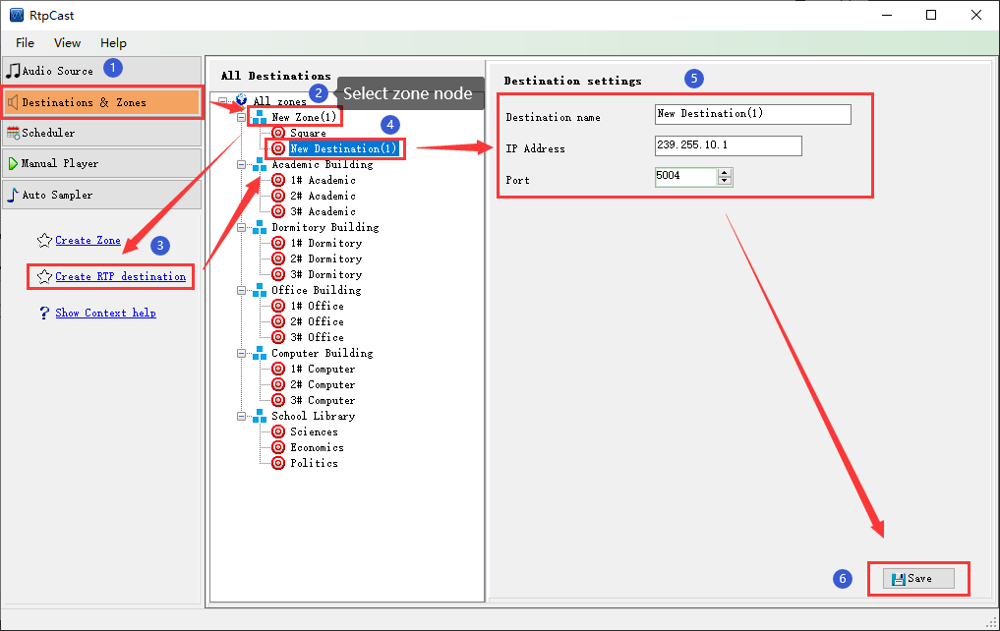

|  |
|
Introduction |
|
The destination belongs to the user-defined zone, which represents the network parameters of the actual device. |
|
Operation |
| (1) You can right-click the zone node, and then create the destination. |
| (2) In the "Destination settings" panel on the right, you can edit the "Destination name", "IP address" and "port". |
| (3) Click [Save] to save the configuration parameters. |